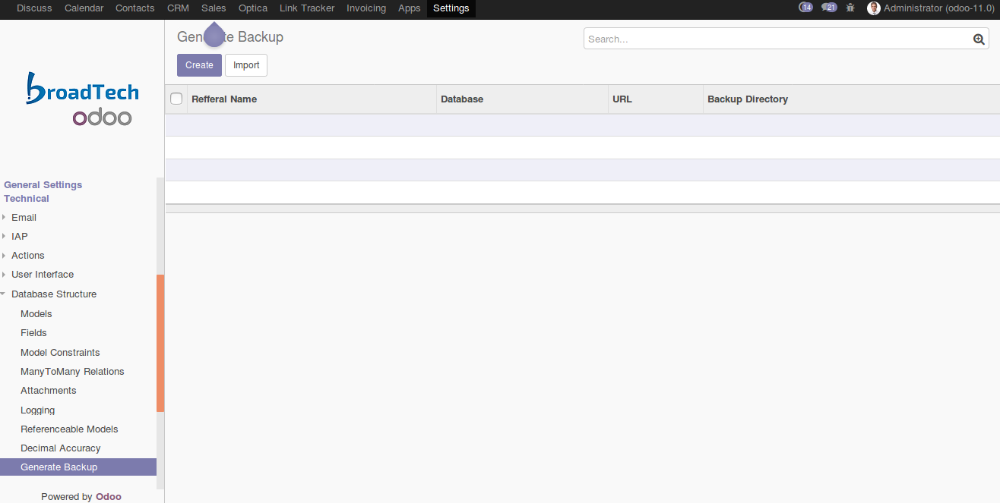

<section class="oe_container oe_dark">
	<div class="oe_row oe_spaced">
        <div class="oe_span12">
            <h2 class="oe_slogan text-center">Web Database Backup</h2>
        </div>
        <div class="oe_span6">
            <p class='oe_mt32 text-justify'>
            This is an option to take database backup from web and configure the file path also.</p>
            
        </div>
        <div class="oe_span6">
            <div class="oe_span6 text-left">
                
            </div>
        </div>
        
    </div>
</section>
